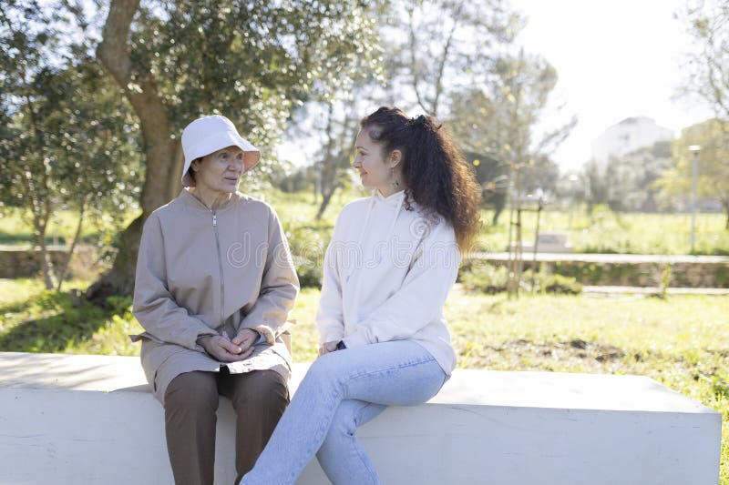

If you have been living on the old rules, hear this with love and without games. Open-air drug use, possession, and paraphernalia are being prosecuted again. Enforcement is not a rumor. It is happening now, on sidewalks, in parks, and around encampments, while cities and federal programs look harder at how homeless funding is used and how public streets look.
This is not a roast. This is not a lecture from somebody who thinks you are disposable. This is a neighbor saying the ground under your feet moved, and we do not want you to learn it from a booking photo.
What changed
Voters passed Prop 36 in 2024. Repeat hard-drug possession can be charged as a treatment-mandated felony.
What that means
If you have two or more prior drug convictions and get caught with fentanyl, heroin, cocaine, meth, or PCP, the case can jump from a misdemeanor track to a felony track.
If you refuse treatment
The court can enter judgment and sentence. That can mean jail, and on later cases, prison time.
The old pattern is expensive now
For years a lot of people got used to a rhythm. Use in public. Get moved along. Maybe a citation. Maybe nothing. Friends would say, they are not really locking people up for that. That rhythm is breaking.
Prop 47 in 2014 made a lot of simple possession a misdemeanor. That is still part of the picture for first and second cases. It is not the whole picture anymore. Prop 36 of 2024 gave prosecutors a new tool for people with two or more prior drug convictions who are found with hard drugs. They can charge a treatment-mandated felony. You can choose court-supervised treatment. If you finish it, the charge can be dismissed. If you refuse, walk away, or fail out, the judge can sentence you.
Paraphernalia is still a charge. Using in the open makes the case easy to prove. Visibility is the point. Streets that used to be treated as a gray zone are being treated as the front porch of the city again.
Love is not enabling
We love you. That is not a slogan. Love means we will not keep pretending that watching someone nod off on a curb with fentanyl in the mix is kindness. Fentanyl and other hard drugs are killing people we know. Overdose is not a rumor either. It is a funeral, then another one.
Enabling looks like friendship when you are tired. It looks like handing someone another day on the same corner and calling it respect. It is not respect. It is leaving a person alone with a substance that does not negotiate.
The good news is simple. We can start taking better care of each other. Care looks like treatment, a bed, a meal, a ride, a phone call to a program, and a community that will not clap for a slow death.

Protect yourself today
- Do not treat the sidewalk as a use site. Public use and visible paraphernalia are the easiest cases to write.
- If you have prior drug convictions, understand that a new hard-drug possession case can be charged as a felony under the 2024 law.
- If a court offers treatment, take it seriously. Completing it can wipe the new charge. Refusing it can put you in a cell.
- Ask for help before the handcuffs. County treatment, harm-reduction programs that actually move people toward stopping, churches, family, the porch network. Use them.
This is not legal advice. It is a public warning written in plain language so nobody can say they were not told.
Why the pressure is rising
Cities are under pressure to clean streets. Federal and state money for homeless programs is being watched more closely. Voters already said they want treatment with teeth, not another year of watching people die in doorways. That political weather is here. Waiting for it to blow over is how people get booked.
Cleaning a street without offering a path is cruelty. Offering a path while pretending the old street rules still apply is also cruelty. Both things can be true. The path that is open right now is treatment instead of a felony sentence, if you qualify and if you actually go.
A word to the whole district
If you love someone who is still out there, tell them the rules changed. Do not argue about whose fault the last decade was. Get them to a door that opens. If you are the person on the sidewalk, you are not garbage. You are also not invisible. The law can see you now. So can we.
We want you alive. We want you home, or housed, or in a program that does not lie to you. Hard time is a real risk. A funeral is a real risk. Neither one is love.
Take care of each other. That is the whole assignment.
Sources and context
- California Proposition 36 (2024), Health and Safety Code section 11395, treatment-mandated felony for repeat hard-drug possession.
- California Proposition 36 (2000), Penal Code section 1210.1, treatment as a condition of probation for qualifying nonviolent possession cases.
- California Proposition 47 (2014), reduced many simple possession offenses to misdemeanors.
- California Health and Safety Code provisions on possession and drug paraphernalia remain in force.
- This page is a community warning, not a substitute for a lawyer.